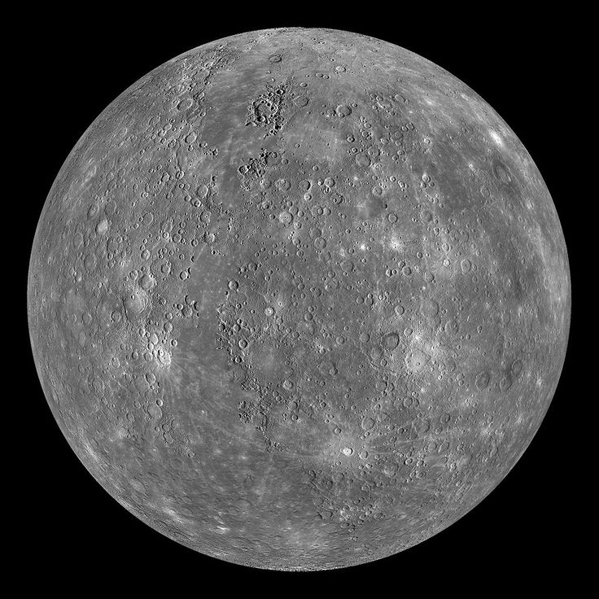
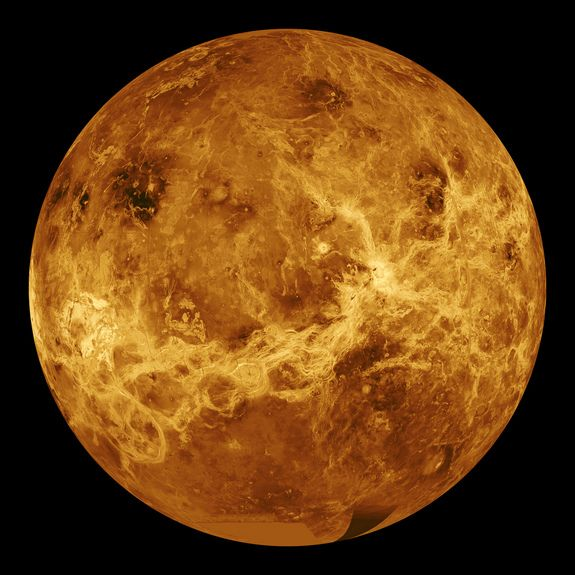
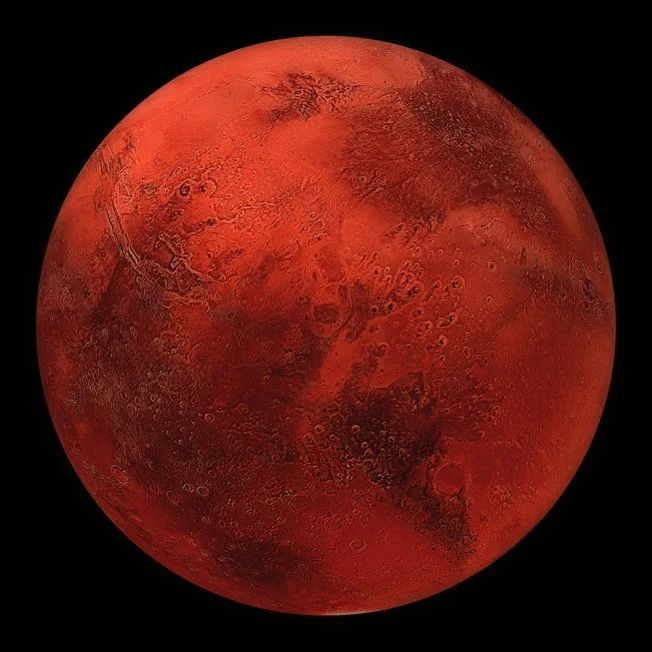
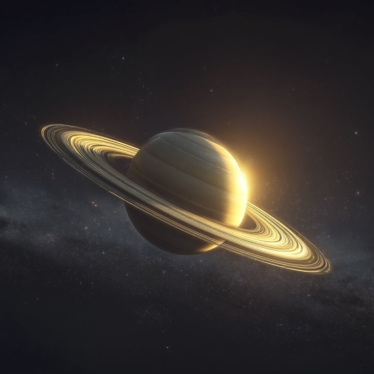

Select a planet above to begin your journey through the cosmos.
Our solar system consists of our star, the Sun, and everything bound to it by gravity—the planets Mercury, Venus, Earth, Mars, Jupiter, Saturn, Uranus, and Neptune; dwarf planets such as Pluto; dozens of moons; and millions of asteroids, comets, and meteoroids.
It is located in an outer spiral arm of the Milky Way galaxy called the Orion Arm.
Mercury

On Mercury, you weigh: 38.0kg
Facts
The Swift Planet: It has the shortest orbit, zipping around the Sun in just 88 days.
Extreme Temperatures: Temperatures swing from 430°C to -180°C.
Shrinking World: Mercury is tectonically active and getting smaller.
Sun Proximity: Despite being closest, it is the second hottest planet.
Cratered Surface: It looks very similar to our Moon.
Venus

On Venus, you weigh: 91.0kg
Facts
The Hottest Planet: A runaway greenhouse effect traps heat at 465°C.
Backward Rotation: Venus rotates in the opposite direction of most planets.
Long Days: A single day lasts longer than a Venusian year.
Crushing Pressure: Air pressure is 90 times higher than Earth's.
Volcanic World: It has more volcanoes than any other planet.
Earth
On Earth, you weigh: 100.0kg
Facts
The Goldilocks Zone: The only known planet with liquid water on its surface.
Life Sustaining: The only place where life has been confirmed.
Protective Shield: Magnetic field protects us from solar radiation.
Recycled Surface: Plate tectonics help regulate our climate.
Atmosphere: Our atmosphere contains 78% nitrogen and 21% oxygen.
Mars

On Mars, you weigh: 38.0kg
Facts
The Red Planet: Reddish hue comes from iron oxide (rust).
Giant Volcanoes: Hosts Olympus Mons, the largest volcano in the solar system.
Grand Canyon: Features Valles Marineris, a massive canyon system.
Thin Atmosphere: Air is mostly CO2 and 100 times thinner than Earth's.
Water Ice: Frozen water exists at its polar ice caps.
Jupiter
On Jupiter, you weigh: 236.0kg
Facts
The King of Planets: More than twice as massive as all other planets combined.
Great Red Spot: A giant storm larger than Earth.
Shortest Day: Completes one rotation in just under 10 hours.
Mini Solar System: Jupiter has 95 officially recognized moons.
Vacuum Cleaner: Gravity protects inner planets from comets.
Saturn

On Saturn, you weigh: 106.0kg
Facts
Ring Leader: Famous for its prominent ice and rock ring system.
Float Factor: Less dense than water; it would float in a bathtub.
Hexagon Storm: Permanent six-sided jet stream at the north pole.
Moon Variety: Saturn has 146 confirmed moons.
Magnetic Power: Field is 578 times more powerful than Earth's.
Uranus
On Uranus, you weigh: 92.0kg
Facts
Sideways Planet: Rotates on its side with an axial tilt of 98 degrees.
Ice Giant: Composed of water, methane, and ammonia ices.
Blue-Green Tint: Methane gas absorbs red light.
Extreme Seasons: Poles experience 42 years of continuous sunlight.
Faint Rings: Has 13 known dark, narrow rings.
Neptune
On Neptune, you weigh: 119.0kg
Facts
Windiest Planet: Winds reach speeds of over 2,100 km/h.
Deep Blue: Its beautiful color comes from methane gas in the atmosphere.
Great Dark Spot: A massive spinning storm first observed by Voyager 2.
The Long Way Round: It takes 165 Earth years to complete one trip around the Sun.
Math Genius: It was the first planet discovered using mathematical calculations!